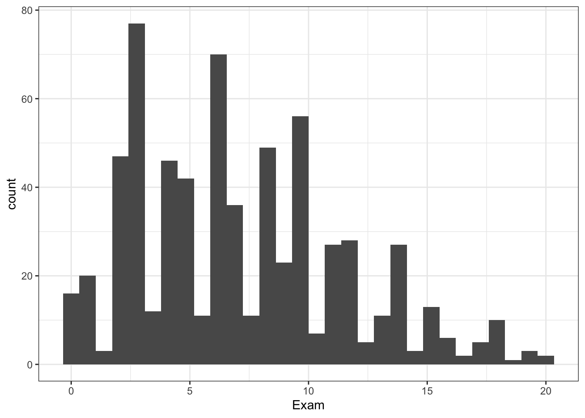
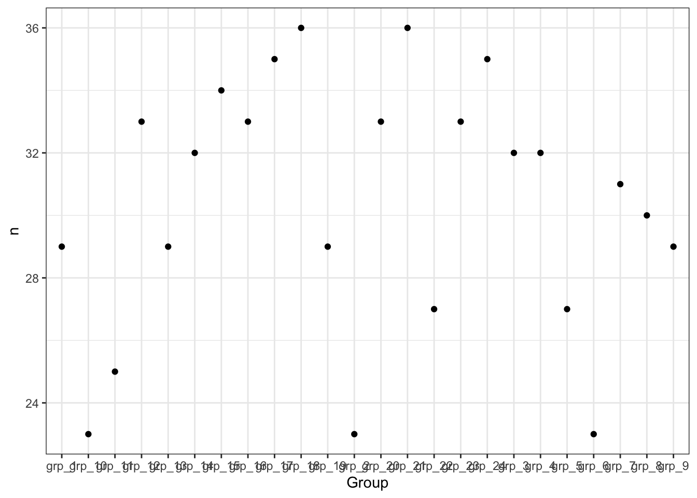

here::i_am("r-101-grade-analysis.Rproj")
library(here)
library(vroom)
library(ggplot2)
library(dplyr)
library(tidyr)
library(stringr)
theme_set(theme_bw())Lab4 grade analysis
Preparation
Question 1
grades <- vroom(here("grades.csv"))Question 2
grades |>
filter(!is.na(Exam))|>
summarise( min = min(Exam), max = max(Exam), median = median(Exam), mean = mean(Exam))|>
knitr::kable()| min | max | median | mean |
|---|---|---|---|
| 0 | 20 | 6.5 | 7.148729 |
Question 3
nb_na <- sum(is.na(grades$Exam))60 students did not take the final exam.
Question 4
grades |>
filter(!is.na(Exam))|>
ggplot(aes(x = Exam), is.na = TRUE)+ geom_histogram()
Question 5
count_grp <-
grades |>
group_by(Group) |>
summarise(count = n())
knitr::kable(count_grp)| Group | count |
|---|---|
| grp_1 | 29 |
| grp_10 | 23 |
| grp_11 | 25 |
| grp_12 | 33 |
| grp_13 | 29 |
| grp_14 | 32 |
| grp_15 | 34 |
| grp_16 | 33 |
| grp_17 | 35 |
| grp_18 | 36 |
| grp_19 | 29 |
| grp_2 | 23 |
| grp_20 | 33 |
| grp_21 | 36 |
| grp_22 | 27 |
| grp_23 | 33 |
| grp_24 | 35 |
| grp_3 | 32 |
| grp_4 | 32 |
| grp_5 | 27 |
| grp_6 | 23 |
| grp_7 | 31 |
| grp_8 | 30 |
| grp_9 | 29 |
Question 6
ggplot(count_grp, aes(x= Group, y = count))+
geom_point()+
theme(axis.text.x=element_text(size=4.5))
Question 7
Method 1
#We take the average grade for each group
grades |>
group_by(Group) |>
filter(!is.na(Exam))|>
summarise(mean = mean(Exam))|>
ggplot(aes(x= Group, y = mean)) + geom_point()+
theme(axis.text.x=element_text(size=4.5))
Method 2
grades |>
filter(!is.na(Exam))|>
ggplot(aes(x = Exam))+
geom_bar()+
facet_wrap(~Group)
Question 8
group_na <-
grades |>
group_by(Group) |>
summarize(na_count = sum(is.na(Exam)))Question 9
ggplot(group_na, aes(x = Group, y = na_count))+ geom_col() + theme(axis.text.x=element_text(size=4.5))
Question 10
options(digits = 3)
new_df <-
pivot_longer(grades, cols= c(Exam, starts_with("MCQ"), starts_with("Online")), names_to = "name", values_to = "value")Question 11
na_student <-
new_df |>
group_by(Id) |>
summarise(na_count = sum(is.na(value)))Question 12
ggplot(na_student, aes(x = Id, y = na_count)) + stat_bin_hex()
Question 13
new_df |>
filter(name == 'Exam') |>
group_by(Group) |>
summarize(na_count = sum(is.na(value))) |>
knitr::kable()| Group | na_count |
|---|---|
| grp_1 | 3 |
| grp_10 | 7 |
| grp_11 | 6 |
| grp_12 | 1 |
| grp_13 | 1 |
| grp_14 | 1 |
| grp_15 | 2 |
| grp_16 | 0 |
| grp_17 | 5 |
| grp_18 | 3 |
| grp_19 | 1 |
| grp_2 | 5 |
| grp_20 | 0 |
| grp_21 | 0 |
| grp_22 | 0 |
| grp_23 | 2 |
| grp_24 | 1 |
| grp_3 | 2 |
| grp_4 | 5 |
| grp_5 | 1 |
| grp_6 | 3 |
| grp_7 | 4 |
| grp_8 | 2 |
| grp_9 | 5 |
Question 14
id_na_online <-
new_df |>
filter(str_starts(name, "Online")) |>
group_by(Id) |>
summarize(na_count = sum(is.na(value))) Question 15
# Step 1: I want to add a column to the previous table with the exam grade for each student
# I sort the grades data base to be able to take the Exam column and add it to the previous table in order to create a new table with all the information we need
grades_arranged <-
grades |>
arrange(Id)
id_na_online_bis <- data_frame(id_na_online, exam_grade = grades_arranged$Exam)Warning: `data_frame()` was deprecated in tibble 1.1.0.
ℹ Please use `tibble()` instead.# Step 2: When several students have the same number of NA, I take the mean of their grades
id_na_online_bis |>
filter(!is.na(exam_grade))|>
group_by(na_count) |>
summarize(mean_exam_grade = mean(exam_grade))|>
# Step 3: graph representation
ggplot(aes(x= na_count, y = mean_exam_grade)) + geom_point() 
Question 16
id_na_mcq <-
new_df |>
filter(str_starts(name, "MCQ")) |>
group_by(Id) |>
summarize(Missed = sum(is.na(value)))|>
mutate(Missed = case_when(Missed == 0 ~ FALSE, TRUE ~ Missed ))|>
mutate(Missed = case_when(Missed != 0 ~ TRUE, TRUE ~ Missed))Question 17
# Creation of the new dataframe with the Id, the Group and Missed grades for each student
group_na_mcq <- data_frame(id_na_mcq, Group = grades_arranged$Group)
# Computing what was asked in the question
percentages <-
group_na_mcq |>
group_by(Group) |>
mutate(P_missed = sum(Missed)/length(Group)) |>
select(-Id, -Missed)|>
distinct()Question 18
#Creating the table with the average grade per group
av_group <-
grades |>
filter(!is.na(Exam))|>
group_by(Group) |>
summarise(mean_grade = mean(Exam))
# Creating the table that will be used for the graph
table_graph <- inner_join(av_group, percentages)Joining with `by = join_by(Group)`#Graph
ggplot(table_graph, aes(x= P_missed, y = mean_grade)) + geom_point()